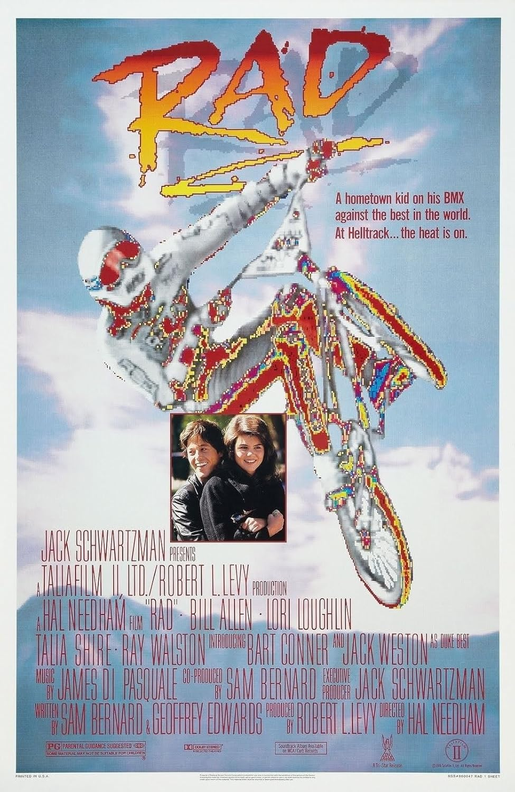
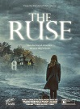
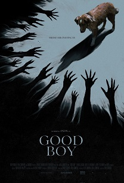

I saw part of this movie unwillingly in an AMC "Screen Unseen" feature. A man was sitting in my chair, and he feigned surprise when I told him that I had reserved that exact seat. When the title card came up, I stood up, informed the other patron that he could have my seat, and walked out.
I saw part of this movie unwillingly in an AMC "Screen Unseen" feature. A man was sitting in my chair, and he feigned surprise when I told him that I had reserved that exact seat. When the title card came up, I stood up, informed the other patron that he could have my seat, and walked out.
 Perhaps the most linear movie ever made. The hero, a talented young BMX rider from a small town, signs up for The Big Race. The organizer of the event intends to use the event to generate positive PR for an up-and-coming star, but the local rider is a better rider and wins. There was some very entertaining stunt riding, but otherwise it was quite dull. When I leaned over to my friend and quietly spoke to him during a trailer, a man directly behind me said "I knew sitting here was a bad idea." He proceeded to bump and kick my seat repeatedly throughout the movie, and, instead of exploding at him, I responded by leaning back as far as I could.
 Utterly predictable - a woman with amnesia wakes up in a base where everyone else has been murdered. Shockingly, it turns out that the man who suddenly appears to help her is not real, and she herself is the killer. The best part of the movie are the references to The Thing and Alien, as well as the robotic doctor which asks for a star rating from its patient after performing an operation. A clear example of a "covid movie" where the characters are kept to a minimum and spend as little time in the same room as possible. To top it all off, the movie uses obvious AI-generated animations in some scenes. Also worthy of note is that a couple entered the theater before me and, even though the room was empty, zeroed in on my seat. As with other seat-stealers, they pretended to be surprised that someone was going to sit in the chair that had already been reserved when they bought their tickets.
Utterly predictable - a woman with amnesia wakes up in a base where everyone else has been murdered. Shockingly, it turns out that the man who suddenly appears to help her is not real, and she herself is the killer. The best part of the movie are the references to The Thing and Alien, as well as the robotic doctor which asks for a star rating from its patient after performing an operation. A clear example of a "covid movie" where the characters are kept to a minimum and spend as little time in the same room as possible. To top it all off, the movie uses obvious AI-generated animations in some scenes. Also worthy of note is that a couple entered the theater before me and, even though the room was empty, zeroed in on my seat. As with other seat-stealers, they pretended to be surprised that someone was going to sit in the chair that had already been reserved when they bought their tickets.
 Glum mafia movie starring Robert De Niro as both the pro- and an-tagonist. Instead of being shown De Niro's ascent to mob-boss-hood to help us understand who this character is and why he is important, which is the normal thing to do when creating art in a visual medium, we are given that information by De Niro talking to the camera as if he were in a documentary. The story comes off as a comedy - the good Niro tries to resign from his role after a failed assassination attempt, while his bad character remains convinced that it is a ruse. After it was over, I was stunned to learn that it was only two hours long.
Glum mafia movie starring Robert De Niro as both the pro- and an-tagonist. Instead of being shown De Niro's ascent to mob-boss-hood to help us understand who this character is and why he is important, which is the normal thing to do when creating art in a visual medium, we are given that information by De Niro talking to the camera as if he were in a documentary. The story comes off as a comedy - the good Niro tries to resign from his role after a failed assassination attempt, while his bad character remains convinced that it is a ruse. After it was over, I was stunned to learn that it was only two hours long.
 Typical Jason Statham fare - Statham is a man living on the margins who is pushed too far by underworld figures. He then reveals that he is, in fact, a secret badass. This movie had trouble squaring this circle with the need for the damsel in distress to be the daughter of a millionaire, but they solved that by having him live out of his pickup truck instead of wandering the streets like in Hummingbird (yes, this is Statham's second movie about a homeless super soldier). Despite being the world's best foreman at an extremely important jobsite, and enjoying the affection of the company's owners, he is not, apparently, paid more than the day laborers he manages. Nevertheless, he decides to rescue the owner's daughter when she is kidnapped in a Taken-like situation and proceeds to massacre numerous Russians and bikers. Unsurprisingly, Sylverster Stallone was involved in its production. Not bad!
Typical Jason Statham fare - Statham is a man living on the margins who is pushed too far by underworld figures. He then reveals that he is, in fact, a secret badass. This movie had trouble squaring this circle with the need for the damsel in distress to be the daughter of a millionaire, but they solved that by having him live out of his pickup truck instead of wandering the streets like in Hummingbird (yes, this is Statham's second movie about a homeless super soldier). Despite being the world's best foreman at an extremely important jobsite, and enjoying the affection of the company's owners, he is not, apparently, paid more than the day laborers he manages. Nevertheless, he decides to rescue the owner's daughter when she is kidnapped in a Taken-like situation and proceeds to massacre numerous Russians and bikers. Unsurprisingly, Sylverster Stallone was involved in its production. Not bad!

A supernatural thriller about a nurse caring for a wheelchair-bound woman with dementia which eventually becomes a so-so murder mystery. Stilted dialogue and odd cuts give the movie an amateurish feel, and the conclusion of the mystery with an Holmesian breakdown of the scheme in a sitting room makes me suspect that the writers have not yet mastered "look, don't tell."
Absolutely abysmal action/martial arts movie. An "anti-assassin" seeks revenge against someone for killing someone else, and John Wick teams up with her eventually. Keanu Reeves looks tired, like he didn't get enough sleep before filming. The only reason I saw this movie was because I had to use the restroom and AMC was nearby. A day later I wound up in the hospital. Although this was unrelated to the movie, I will forever associate Ballerina with acute physical suffering.

Clearly inspired by All-Star Superman, one of, if not the best Superman miniseries. No shoehorned Batman cameo, no excessive "worldbuilding", and no tryhard efforts to show that the writers and director are familiar with Superman "lore" with pointless deep cut references as is so common in franchise reboots. My sole objection is that the Kents have Southern accents and sound nothing like normal Kansans.
Totally predictable sequel to a movie which I never got around to seeing. The audience was well-behaved, but I knew this would not be an especially gripping horror film when I saw how young many of them were - it reminded me of going to see Five Nights at Freddy's under the mistaken assumption that it was going to be a grindhouse film crossed with Chuck E. Cheese, only to walk into a room mostly filled with children. Theaters no longer check IDs for R-rated movies, but that is understandable. Fifty kids buying $20 IMAX tickets is a good haul!
In any case, the movie itself reminded me of Nightmare on Elm Street, only it took longer to get to the action, there was less of it, and it wasn't as good except for the ending, where the heroes somehow manage to kill a ghost with an invisible axe.

A truly excellent movie! Our hero, a dog named Indy, does the best he can to protect his master, who has lung cancer and has gone to an old family-owned home in the woods to stay for a few days, or so he claims to his sister. It becomes clear during the course of the film that he has actually gone there to die. Indy is not aware of the specifics, of course, but throughout the movie he tries to confront a demonic entity which stalks his master, as well as the ghost of another dog who perished many years ago. I was reminded throughout of Sasquatch Sunset, another movie about animals (or animal-like beings) who know that something is wrong but lack the intellectual tools needed to deal with it. The movie is a short 72 minutes, but my suspicion is that this is due to the impossibility of filming a lot of filler scenes when your main character can't speak.
This runtime includes a post-credit insert with the writer/director wherein it is made clear to the audience that Indy, which is also the dog's real name, was never actually put in a dangerous situation or made to feel afraid; presumably he feared the backlash that might otherwise occur if that concern wasn't addressed before the audience left the theater.